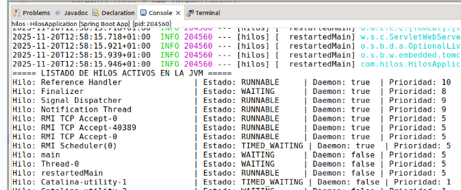
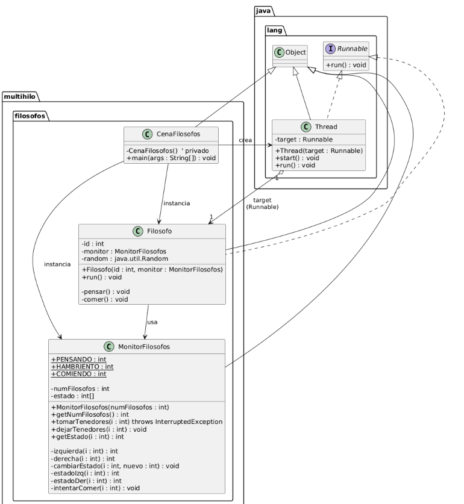
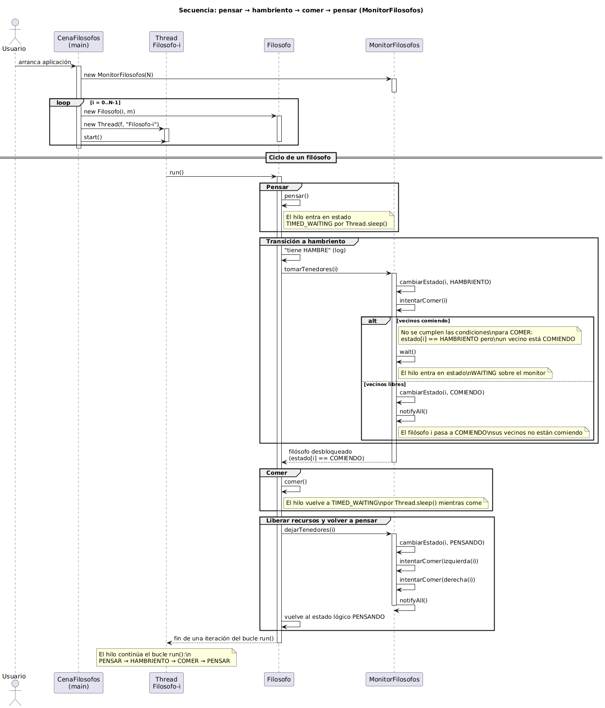
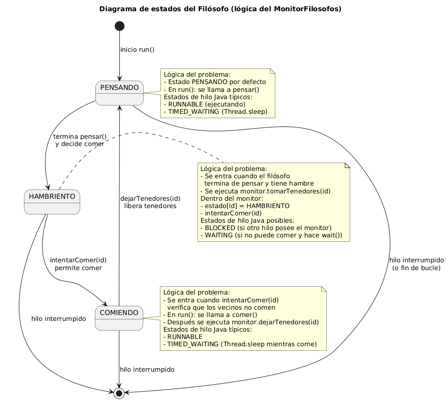

Programación multihilo en Java: la cena de los filósofos
En este tutorial veremos cómo programar una aplicación multihilo en Java usando el problema clásico de la cena de los filósofos y cómo se relaciona con los criterios de evaluación del resultado de aprendizaje: “Desarrolla aplicaciones compuestas por varios hilos de ejecución…”
0. El problema clásico de la cena de los filósofos
El problema de la cena de los filósofos, propuesto por Edsger Dijkstra, es uno de los ejemplos más conocidos en programación concurrente. Sirve para estudiar cómo varios procesos (o hilos) compiten por recursos compartidos de forma segura.
Imaginamos una mesa redonda con N filósofos sentados alrededor. Entre cada filósofo y su vecino hay un tenedor (o palillo). Cada filósofo alterna entre dos actividades: pensar y comer.
- Para comer, un filósofo necesita tomar dos tenedores: el de su izquierda y el de su derecha.
- Los tenedores son recursos compartidos: cada tenedor solo puede ser usado por un filósofo a la vez.
- Mientras piensa, el filósofo no necesita tenedores.
El reto consiste en diseñar un protocolo que permita que todos los filósofos coman “suficientemente a menudo”, sin caer en problemas típicos de la concurrencia como el interbloqueo (deadlock), la inanición (starvation) o las condiciones de carrera (race conditions).

En términos de programación multihilo:
- Cada filósofo se modela como un hilo de ejecución independiente.
- Cada tenedor representa un recurso compartido que no puede ser usado por más de un hilo a la vez.
- La mesa y el protocolo que siguen los filósofos se modelan como una estructura de sincronización (monitor, semáforos, locks, etc.).
Una solución correcta debe garantizar:
- Seguridad: nunca dos filósofos vecinos comen simultáneamente con el mismo tenedor.
- Ausencia de interbloqueo: el sistema no se queda bloqueado para siempre.
- Equidad: ningún filósofo se queda permanentemente sin comer.
En este tutorial implementaremos primero una solución basada en un
monitor en Java, y después veremos variantes más
avanzadas usando java.util.concurrent y semáforos.
1. Teoría básica de programación multihilo
Un hilo es una secuencia de instrucciones que se ejecuta de forma (aparentemente) paralela a otras. Todos los hilos de un programa comparten el mismo espacio de memoria y los mismos recursos (objetos, ficheros, variables estáticas, etc.).
En la cena de los filósofos: cada filósofo es un hilo y los tenedores/palillos son recursos compartidos que varios hilos intentan usar al mismo tiempo. En nuestra implementación, esos recursos se gestionan a través de un monitor que controla quién puede comer y cuándo.
Desde el punto de vista del sistema operativo, cada hilo dispone de su propio contexto de ejecución (contador de programa, pila, registros), pero comparte el espacio de direcciones. Justamente esta compartición de memoria es la que hace necesaria la sincronización cuando varios hilos leen y escriben sobre las mismas estructuras de datos.
Los hilos en Java pueden pasar por distintos estados: NEW, RUNNABLE, BLOCKED, WAITING, TIMED_WAITING, TERMINATED.
NEW: se ha creado el hilo, pero aún no se ha iniciado.RUNNABLE: listo para usar CPU (ejecutándose o en cola).BLOCKED/WAITING: espera por un recurso o una condición.TIMED_WAITING: espera con tiempo límite (por ejemplo,sleep()).TERMINATED: el métodorun()ha terminado.
En la cena de los filósofos, los hilos pasan frecuentemente por
estados de WAITING y TIMED_WAITING al
esperar por tenedores o simular que piensan/comen.
Observar estos estados en el depurador (o imprimiendo trazas) ayuda
a comprender cómo el planificador cambia de un hilo a otro y cómo
las primitivas de sincronización (wait(), notifyAll(),
sleep(), adquisición de monitores y semáforos) generan
transiciones entre estados.

Las clases básicas para trabajar con hilos en Java son:
java.lang.Thread(creación y gestión directa de hilos).java.lang.Runnable(encapsula la tarea que ejecutará el hilo).- Métodos como
start(),run(),sleep(),interrupt().
Para sincronización y concurrencia avanzada también existen
librerías como java.util.concurrent, que proporcionan
abstracciones de más alto nivel (colas bloqueantes, pools de hilos,
semáforos, locks, etc.). En la primera implementación usaremos
principalmente las primitivas clásicas
(synchronized, wait(), notifyAll()) y
en las variantes veremos soluciones equivalentes usando semáforos.
Uso de java.util.concurrent
La biblioteca java.util.concurrent introduce un modelo de
programación por tareas:
ExecutorService: gestiona un pool de hilos y permite enviar tareas conexecute()osubmit().Callable<T>yFuture<T>: representan tareas que devuelven un resultado y permiten recuperar el valor de forma bloqueante (get()) o con timeout.Semaphore: contador que controla cuántos hilos pueden acceder simultáneamente a un recurso.LockyReentrantLock: alternativa asynchronizedcon más operaciones (bloqueo con timeout, comprobación no bloqueante, etc.).
Estas abstracciones son preferibles a las primitivas básicas cuando:
- La aplicación crea y destruye muchos hilos (es más eficiente reutilizar
hilos con un
ExecutorService). - Necesitamos cancelar tareas, esperar resultados o componer varias tareas.
- Se requiere mayor control sobre la política de planificación o sobre la
granularidad del bloqueo (
Lockfrente asynchronized). - Queremos expresar restricciones de concurrencia de forma explícita,
por ejemplo con
Semaphoreo conReadWriteLock.
El patrón de monitor que usamos en este tutorial se puede ver como una
versión manual de algunos de estos mecanismos, basada en el bloqueo
implícito de objetos y en variables condición implementadas con
wait() / notifyAll().
Los hilos pueden tener prioridades (de 1 a 10). El planificador del sistema operativo suele dar más tiempo de CPU a los hilos con mayor prioridad, aunque no está garantizado.
En Java podemos usar:
t.setPriority(Thread.NORM_PRIORITY + 1);En la cena de los filósofos podríamos dar más prioridad a ciertos filósofos para estudiar cómo afecta al orden en que comen (y relacionarlo con problemas de inanición).
En sistemas de producción se recomienda usar las prioridades con moderación
y centrarse más en el diseño de la sincronización y en el uso de
ExecutorService, ya que el comportamiento exacto de las
prioridades depende en gran medida del sistema operativo.
La sincronización evita que varios hilos accedan al mismo recurso a la vez produciendo errores (condiciones de carrera).
En Java se usa:
synchronizedpara proteger secciones críticas.wait()para poner un hilo en espera mientras un recurso no está disponible.notify()/notifyAll()para despertar hilos que estaban esperando.
En nuestro problema, el monitor de filósofos usa estos mecanismos
para garantizar que solo los filósofos que puedan comer (sus vecinos no comen)
pasen al estado de COMIENDO. Cada llamada a wait() se asocia al
intrinsic lock del objeto monitor, y las llamadas a
notifyAll() despiertan a los filósofos que estaban bloqueados en
ese mismo monitor.
El patrón de monitor implementa la idea de que todos los accesos al recurso compartido se realizan a través de un objeto intermediario que:
- Encapsula el estado compartido (en este caso, el array
estado[]). - Define operaciones atómicas (
tomarTenedores,dejarTenedores) que mantienen las invariantes del sistema. - Usa variables condición (
wait()/notifyAll()) para suspender y reanudar hilos según se cumplan ciertas condiciones lógicas.
Cuando varios hilos comparten información pueden aparecer:
- Condiciones de carrera (race conditions).
- Interbloqueo (deadlock).
- Inanición (starvation).
Condiciones de carrera
Una condición de carrera se da cuando el resultado final de un programa
depende del orden no controlado en que los hilos intercalan sus operaciones.
Por ejemplo, si dos hilos incrementan una misma variable contador
sin sincronización:
contador = contador + 1;
cada incremento puede leerse y escribirse de forma intercalada, produciendo
valores perdidos. En la cena de los filósofos, una condición de carrera
podría permitir que dos filósofos vecinos entren a la vez en estado COMIENDO
si el acceso a estado[] no se protegiera con
synchronized.
Interbloqueo (deadlock)

Un deadlock se produce cuando un conjunto de hilos espera indefinidamente por recursos que se encuentran retenidos por otros hilos del propio conjunto. Clásicamente se describe en términos de cuatro condiciones: exclusión mutua, espera circular, retención y espera, y no expropiación.
La cena de los filósofos es un ejemplo canónico: si todos los filósofos toman primero el tenedor de la izquierda y esperan al de la derecha, se forma un ciclo de dependencias que impide progresar. Nuestro monitor evita este deadlock al garantizar que solo se asigna el estado COMIENDO cuando ningún vecino lo está, rompiendo la espera circular.
Inanición (starvation)
La inanición ocurre cuando un hilo nunca llega a acceder al recurso, aunque teóricamente podría hacerlo. Por ejemplo, si el planificador siempre da prioridad a los mismos hilos, uno de ellos podría no comer nunca.
En el monitor de filósofos, la inanición se puede producir si la política de
despertar de hilos no es justa. Aunque notifyAll() despierta a
todos, la elección de cuál adquiere el monitor a continuación depende del
planificador. Las variantes con semáforos y con tiempo de espera ofrecen
estrategias adicionales para reducir o monitorizar la inanición.
Cómo ayuda el patrón Monitor
El patrón Monitor reduce estos problemas:
- El estado compartido se encapsula y solo es accesible a través de métodos sincronizados.
- Las invariantes (por ejemplo, “ningún filósofo come si un vecino está comiendo”) se comprueban dentro del monitor antes de modificar el estado.
- Las variables condición permiten suspender hilos hasta que la invariante vuelva a cumplirse, evitando bucles activos y uso innecesario de CPU.
Aun así, el patrón monitor no garantiza por sí solo la ausencia de deadlocks o inanición: es el diseñador quien debe escoger correctamente el orden de adquisición de recursos y las condiciones de activación de los hilos.
2. Implementación en Java de la cena de los filósofos (Monitor)
A continuación se muestra una implementación en Java basada en un
monitor que controla el estado de cada filósofo:
PENSANDO (0), HAMBRIENTO (1) y COMIENDO (2).
Esta versión se inspira en soluciones clásicas en C, adaptadas a Java con
synchronized, wait() y notifyAll(), y sigue
buenas prácticas de programación concurrente (inmutabilidad de la configuración,
encapsulación del estado y manejo correcto de interrupciones).
Diagrama de Clases
Diagrama Secuencia
Diagrama de Estados
2.1. Clase MonitorFilosofos (monitor de sincronización)
/**
* Monitor de sincronización para el problema de la cena de los filósofos.
* Encapsula el estado de cada filósofo y garantiza que solo puede comer
* un filósofo cuyos vecinos no estén comiendo.
*/
public final class MonitorFilosofos {
public static final int PENSANDO = 0;
public static final int HAMBRIENTO = 1;
public static final int COMIENDO = 2;
private final int numFilosofos;
// Estados: 0 = PENSANDO, 1 = HAMBRIENTO, 2 = COMIENDO
private final int[] estado;
/**
* Crea un monitor para N filósofos.
*
* @param numFilosofos número de filósofos (N > 1)
*/
public MonitorFilosofos(final int numFilosofos) {
if (numFilosofos <= 1) {
throw new IllegalArgumentException("Debe haber al menos dos filósofos");
}
this.numFilosofos = numFilosofos;
this.estado = new int[numFilosofos];
for (int i = 0; i < numFilosofos; i++) {
estado[i] = PENSANDO; // todos empiezan pensando
}
}
public int getNumFilosofos() {
return numFilosofos;
}
private int izquierda(final int i) {
return (i + numFilosofos - 1) % numFilosofos;
}
private int derecha(final int i) {
return (i + 1) % numFilosofos;
}
private void cambiarEstado(final int i, final int nuevo) {
estado[i] = nuevo;
}
private int estadoIzq(final int i) {
return estado[izquierda(i)];
}
private int estadoDer(final int i) {
return estado[derecha(i)];
}
/**
* Intenta que el filósofo i pase a estado COMIENDO si sus vecinos
* no están comiendo. Este método debe llamarse siempre con el monitor
* adquirido (dentro de un método synchronized).
*/
private void intentarComer(final int i) {
if (estado[i] == HAMBRIENTO
&& estadoIzq(i) != COMIENDO
&& estadoDer(i) != COMIENDO) {
cambiarEstado(i, COMIENDO);
// Despertamos a todos para que los filósofos que estaban
// esperando puedan reevaluar su condición.
notifyAll();
}
}
/**
* Filósofo i se declara hambriento e intenta comer. Si no puede,
* el hilo queda bloqueado (WAITING) hasta que pueda pasar a COMIENDO.
*
* @param i índice del filósofo (0..N-1)
* @throws InterruptedException si el hilo es interrumpido mientras espera
*/
public synchronized void tomarTenedores(final int i) throws InterruptedException {
cambiarEstado(i, HAMBRIENTO);
intentarComer(i);
// Si no ha podido empezar a comer, espera hasta que su estado sea COMIENDO
while (estado[i] != COMIENDO) {
wait(); // pasa a estado WAITING asociado a este monitor
}
}
/**
* Filósofo i deja de comer y pasa a pensar. Después de liberar los
* tenedores, permite que sus vecinos intenten comer.
*
* @param i índice del filósofo (0..N-1)
*/
public synchronized void dejarTenedores(final int i) {
cambiarEstado(i, PENSANDO);
// Sus vecinos pueden intentar comer ahora que i ha dejado los tenedores.
intentarComer(izquierda(i));
intentarComer(derecha(i));
notifyAll();
}
/**
* Solo para depuración o para mostrar el estado en una interfaz gráfica.
*
* @param i índice del filósofo
* @return estado del filósofo i
*/
public synchronized int getEstado(final int i) {
return estado[i];
}
}2.2. Clase Filosofo (hilo que usa el monitor)
import java.util.Random;
/**
* Representa a un filósofo que piensa y come de forma repetida.
* Cada filósofo es un hilo que coordina su acceso a los tenedores
* a través del MonitorFilosofos.
*/
public final class Filosofo implements Runnable {
private final int id;
private final MonitorFilosofos monitor;
private final Random random = new Random();
public Filosofo(final int id, final MonitorFilosofos monitor) {
this.id = id;
this.monitor = monitor;
}
private void pensar() throws InterruptedException {
System.out.println("Filósofo " + id + " PENSANDO...");
// Simulamos un tiempo variable de pensamiento (TIMED_WAITING)
Thread.sleep(random.nextInt(2000) + 500L);
}
private void comer() throws InterruptedException {
System.out.println("Filósofo " + id + " COMIENDO 🍝");
Thread.sleep(random.nextInt(2000) + 500L);
}
@Override
public void run() {
try {
while (!Thread.currentThread().isInterrupted()) {
pensar();
System.out.println("Filósofo " + id + " tiene HAMBRE.");
// Puede quedar en estado WAITING dentro del monitor
monitor.tomarTenedores(id);
comer();
monitor.dejarTenedores(id);
}
} catch (InterruptedException e) {
// Restablecemos el estado de interrupción y salimos del bucle
Thread.currentThread().interrupt();
System.out.println("Filósofo " + id + " interrumpido. Termina su ejecución.");
}
}
}2.3. Clase CenaFilosofos (método main)
/**
* Punto de entrada de la aplicación. Crea N filósofos y un monitor
* compartido para coordinar el acceso a los recursos (tenedores).
*/
public final class CenaFilosofos {
private CenaFilosofos() {
// Evitamos instanciación
}
public static void main(String[] args) {
final int N = 5;
final MonitorFilosofos monitor = new MonitorFilosofos(N);
for (int i = 0; i < N; i++) {
final Filosofo f = new Filosofo(i, monitor);
final Thread t = new Thread(f, "Filosofo-" + i);
// Opcional: prioridad para trabajar el criterio g)
// t.setPriority(Thread.NORM_PRIORITY + (i % 2));
t.start(); // el hilo pasa de NEW a RUNNABLE
}
}
}Para ejecutar el programa:
javac MonitorFilosofos.java Filosofo.java CenaFilosofos.java
java CenaFilosofos3. Relación con los criterios de evaluación
A continuación se explica cómo este caso práctico y la teoría anterior permiten trabajar cada criterio del resultado de aprendizaje “Desarrolla aplicaciones compuestas por varios hilos de ejecución…”. Además de la descripción conceptual, se indican las clases y métodos concretos en los que se evidencia cada criterio.
La cena de los filósofos representa una situación donde varias tareas deben ejecutarse simultáneamente: cada filósofo piensa y quiere comer a su ritmo. Si se hiciera con un único hilo, la simulación sería irreal (los filósofos actuarían uno detrás de otro).
Conceptos teóricos relacionados: contexto de ejecución de los hilos, recursos compartidos.
Técnicamente, este criterio se materializa cuando el diseño separa la
lógica de cada filósofo (clase Filosofo, que implementa
Runnable) del recurso compartido
(MonitorFilosofos). El hecho de que el main
cree un hilo por cada filósofo (new Thread(f, "Filosofo-" + i))
indica que la solución reconoce explícitamente que cada filósofo es una
unidad de ejecución independiente que se beneficia del paralelismo.
En la clase CenaFilosofos se crean hilos con:
final Filosofo f = new Filosofo(i, monitor);
final Thread t = new Thread(f, "Filosofo-" + i);
t.start();
Aquí el alumnado reconoce el uso de Thread, el método
start() y la interfaz Runnable.
La finalización controlada se puede trabajar introduciendo
un número máximo de ciclos o usando interrupt().
Relación con la teoría: librerías y clases, estados del hilo (NEW, RUNNABLE, TERMINATED).
Este criterio también queda reflejado en la gestión de interrupciones en
Filosofo.run(). El bloque catch (InterruptedException e)
restablece el estado de interrupción y termina el bucle, mostrando un
mensaje de fin de ejecución. Con ello el alumno aprende a terminar
limpiamente un hilo multihilo sin recurrir a métodos obsoletos como
stop().
El programa implementa varios hilos reales (uno por filósofo)
que ejecutan código concurrente en el método run().
El alumnado no solo ve un ejemplo teórico, sino una aplicación funcional de programación multihilo.
Relación con la teoría: programación de aplicaciones multihilo.
Desde el punto de vista del código, este criterio se evidencia en la
implementación de la interfaz Runnable en
Filosofo y en el bucle infinito (condicionado por la
interrupción) dentro de run(). Cada iteración del bucle
ejecuta la secuencia pensar() → tomarTenedores() → comer() →
dejarTenedores(), mostrando una aplicación completa con
comportamiento concurrente observable en consola.
Los estados se observan en el código:
- NEW: al crear
Thread t = new Thread(...). - RUNNABLE: tras llamar a
t.start(). - TIMED_WAITING: al usar
Thread.sleep()enpensar()ycomer(). - WAITING: dentro de
MonitorFilosofos.tomarTenedores()conwait()cuando no puede comer aún. - TERMINATED: cuando el método
run()termina (o se interrumpe).
Relación con la teoría: estados de un hilo, cambios de estado.
La propia lógica de sincronización del monitor muestra una gestión
consciente de estos estados: al entrar en
tomarTenedores(), el hilo adquiere el monitor (pasa a
BLOCKED si otro filósofo lo posee), cambia su estado lógico a
HAMBRIENTO y, si no puede comer, ejecuta wait(),
pasando a WAITING. Cuando otro filósofo libera los tenedores y
ejecuta notifyAll(), el hilo despierta y vuelve a
RUNNABLE, reintentando la condición del bucle while.
La clase MonitorFilosofos actúa como recurso compartido.
Todos los filósofos (hilos) acceden al mismo array estado[] y a
los métodos tomarTenedores() y dejarTenedores(),
que están protegidos con synchronized.
Relación con la teoría: recursos compartidos, compartición de información.
En términos de diseño, este criterio se refleja en cómo se pasa la misma
instancia de MonitorFilosofos monitor al constructor de cada
Filosofo. No se duplican los recursos (tenedores) por hilo,
sino que se centraliza su gestión en un único objeto. La sincronización
sobre this dentro de los métodos del monitor garantiza que
las lecturas y escrituras sobre estado[] se realizan con
exclusión mutua y memoria coherente.
La sincronización se consigue con:
synchronizeden los métodos del monitor.wait()ynotifyAll()para gestionar la espera por los recursos.- Lógica de vecinos (
intentarComer()) que garantiza que solo un filósofo coma cuando sus vecinos no están comiendo.
Relación con la teoría: sincronización de hilos, problemas de compartición.
Específicamente, el método tomarTenedores(int i) ilustra el
uso de una variable de condición codificada como un
bucle while alrededor de wait(). Esto implementa
el patrón “check-then-sleep”, que garantiza que el hilo solo
avanza cuando se cumplen las condiciones lógicas de seguridad. La
combinación de este patrón con intentarComer(i) y
dejarTenedores(i) constituye una solución completa basada
en monitores para la sincronización de los hilos.
En la clase CenaFilosofos se puede activar el código comentado:
t.setPriority(Thread.NORM_PRIORITY + (i % 2));Así parte del alumnado puede experimentar con diferentes prioridades y observar si algún filósofo come más veces que otros (posible inanición).
Relación con la teoría: gestión de hilos y prioridades.
Desde el punto de vista técnico, modificar las prioridades antes de llamar
a start() permite estudiar cómo el planificador del sistema
operativo distribuye la CPU. Aunque el estándar de Java no garantiza un
comportamiento determinista, el experimento es útil para reflexionar sobre
la relación entre la capa de aplicación (decisión de prioridades en
CenaFilosofos) y la capa de ejecución (planificador real),
y sobre los riesgos de provocar starving si se abusa de prioridades altas.
El código está documentado con comentarios y mensajes por consola. El alumnado puede:
- Seguir la traza de cada hilo (filósofo).
- Usar puntos de ruptura en el depurador.
- Detectar posibles situaciones de bloqueo si se modifica la lógica del monitor.
Relación con la teoría: programación de aplicaciones multihilo y buenas prácticas.
Las cabeceras de clase y método en MonitorFilosofos,
Filosofo y CenaFilosofos siguen un estilo de
documentación tipo Javadoc, lo que facilita la generación automática de
documentación técnica. Además, los mensajes explicativos en
System.out.println() permiten depurar la ejecución concurrente
sin necesidad de herramientas externas, algo especialmente útil en
entornos docentes o en ejercicios de laboratorio.
El alumnado puede observar cómo el sistema operativo reparte la CPU entre los hilos según el planificador y las prioridades. Al ejecutar varias veces, el orden en que los filósofos comen cambia, lo que permite comentar el contexto de ejecución real: cambios de contexto, planificación, etc.
Relación con la teoría: contexto de ejecución de los hilos.
En el ejemplo se utilizan las librerías básicas:
java.lang.Thread, java.lang.Runnable y los
métodos de la clase Object (wait(),
notifyAll()).
En las variantes se introduce también java.util.concurrent.Semaphore
para mostrar soluciones más avanzadas.
Relación con la teoría: librerías y clases de programación multihilo.
Si se elimina la sincronización (por ejemplo, se quita
synchronized y wait()/notifyAll() del monitor),
aparecen errores:
- Varios filósofos podrían entrar en estado de COMIENDO simultáneamente sin respetar la lógica de vecinos.
- Aparecen condiciones de carrera y resultados incoherentes.
- Puede producirse interbloqueo si todos esperan indefinidamente.
Esto permite reconocer y discutir los problemas clásicos de compartición de información.
Relación con la teoría: compartición de información entre hilos. Problemas derivados.
4. Variantes y extensiones del problema de los filósofos
El problema de los cinco filósofos tiene diversas variantes que permiten explorar soluciones más complejas a los desafíos de sincronización y concurrencia en sistemas distribuidos. A continuación se presentan algunas de ellas con ejemplos en Java.
En esta variante se introduce un portero que solo permite que se sienten a la mesa como máximo cuatro filósofos a la vez. Esta restricción reduce las probabilidades de interbloqueo, ya que siempre hay al menos un filósofo que podría acceder a ambos tenedores.
En Java podemos implementar este portero usando un
Semaphore de la biblioteca java.util.concurrent:
import java.util.concurrent.Semaphore;
/**
* Envuelve al MonitorFilosofos añadiendo un "portero" (footman)
* que limita el número de filósofos que se sientan simultáneamente.
*/
public final class MonitorConFootman {
private static final int MAX_SENTADOS = 4;
private final MonitorFilosofos monitor;
private final Semaphore footman = new Semaphore(MAX_SENTADOS, true); // fairness=true
public MonitorConFootman(final MonitorFilosofos monitor) {
this.monitor = monitor;
}
public void sentarse(final int i) throws InterruptedException {
// El portero limita el número de filósofos concurrentemente sentados
footman.acquire(); // espera si ya hay MAX_SENTADOS filósofos sentados
monitor.tomarTenedores(i);
}
public void levantarse(final int i) {
monitor.dejarTenedores(i);
footman.release(); // libera un sitio en la mesa
}
}El filósofo ahora usa el monitor con portero:
public final class FilosofoFootman implements Runnable {
private final int id;
private final MonitorConFootman monitor;
public FilosofoFootman(final int id, final MonitorConFootman monitor) {
this.id = id;
this.monitor = monitor;
}
@Override
public void run() {
try {
while (!Thread.currentThread().isInterrupted()) {
// pensar...
System.out.println("Filósofo " + id + " PENSANDO (footman)...");
Thread.sleep(1000L);
monitor.sentarse(id);
System.out.println("Filósofo " + id + " COMIENDO (footman) 🍝");
Thread.sleep(1000L);
monitor.levantarse(id);
}
} catch (InterruptedException e) {
Thread.currentThread().interrupt();
}
}
}
Esta variante muestra cómo una pequeña restricción en el acceso a los recursos
puede mejorar significativamente la seguridad y eficiencia en concurrencia.
El semáforo actúa como un contador de plazas disponibles en la mesa, mientras
que la lógica de vecinos sigue delegada en MonitorFilosofos.
Otra solución consiste en permitir que cada filósofo suelte los tenedores después de esperar un tiempo aleatorio si no puede obtener ambos. Esto simula una espera probabilística que reduce la posibilidad de interbloqueo y se utiliza en sistemas donde los procesos deben ceder los recursos temporalmente si no logran completar su tarea en un período específico.
Ejemplo de lógica con tiempo máximo de intento:
import java.util.Random;
public final class FilosofoTimeout implements Runnable {
private final int id;
private final MonitorFilosofos monitor;
private final Random random = new Random();
public FilosofoTimeout(final int id, final MonitorFilosofos monitor) {
this.id = id;
this.monitor = monitor;
}
@Override
public void run() {
try {
while (!Thread.currentThread().isInterrupted()) {
// Pensar
Thread.sleep(1000L);
long inicio = System.currentTimeMillis();
long timeout = 2000L + random.nextInt(2000);
monitor.tomarTenedores(id);
// Si no llega a COMER en cierto tiempo, suelta los tenedores
while (monitor.getEstado(id) != MonitorFilosofos.COMIENDO) {
if (System.currentTimeMillis() - inicio > timeout) {
System.out.println("Filósofo " + id
+ " se rinde y vuelve a pensar (timeout).");
monitor.dejarTenedores(id);
break;
}
Thread.sleep(50L);
}
if (monitor.getEstado(id) == MonitorFilosofos.COMIENDO) {
// Comer normalmente
Thread.sleep(1000L);
monitor.dejarTenedores(id);
}
}
} catch (InterruptedException e) {
Thread.currentThread().interrupt();
}
}
}Esta técnica es útil en sistemas distribuidos donde los procesos tienen diferentes prioridades y tiempos de espera, y se desea evitar bloqueos largos.
En esta variante, cada filósofo alterna entre pensar y comer en un ciclo fijo o programado, de manera que los recursos se distribuyen en intervalos predecibles. Este enfoque se usa en sistemas de tiempo real donde los procesos necesitan sincronizarse en intervalos regulares.
Ejemplo simplificado:
public final class FilosofoCiclico implements Runnable {
private final int id;
private final MonitorFilosofos monitor;
public FilosofoCiclico(final int id, final MonitorFilosofos monitor) {
this.id = id;
this.monitor = monitor;
}
@Override
public void run() {
try {
while (!Thread.currentThread().isInterrupted()) {
// Pensar exactamente 1 segundo
Thread.sleep(1000L);
monitor.tomarTenedores(id);
// Comer exactamente 2 segundos
Thread.sleep(2000L);
monitor.dejarTenedores(id);
}
} catch (InterruptedException e) {
Thread.currentThread().interrupt();
}
}
}Este modelo se relaciona con sistemas embebidos de monitoreo de sensores, donde cada dispositivo accede a la red o a los recursos de procesamiento en intervalos regulares, evitando bloqueos e injusticias prolongadas.
FilosofoConSemaforos)
En esta variante implementamos la cena de los filósofos únicamente con
semáforos de java.util.concurrent. Cada tenedor se modela como
un Semaphore binario (permiso = 1) y se añade un semáforo
adicional que actúa como portero con N - 1 permisos.
De este modo, como máximo se sientan N - 1 filósofos
simultáneamente, lo que evita el interbloqueo.
4.4.1. Clase FilosofoConSemaforos
import java.util.Random;
import java.util.concurrent.Semaphore;
/**
* Implementación de un filósofo usando únicamente semáforos:
* - Un array de Semaphore para los tenedores (uno por posición).
* - Un Semaphore adicional (portero) con N-1 permisos para evitar deadlock.
*/
public final class FilosofoConSemaforos implements Runnable {
private final int id;
private final Semaphore[] tenedores;
private final Semaphore portero;
private final Random random = new Random();
public FilosofoConSemaforos(final int id,
final Semaphore[] tenedores,
final Semaphore portero) {
this.id = id;
this.tenedores = tenedores;
this.portero = portero;
}
private int izquierda() {
return id;
}
private int derecha() {
return (id + 1) % tenedores.length;
}
private void pensar() throws InterruptedException {
System.out.println("Filósofo " + id + " PENSANDO (semáforos)...");
Thread.sleep(random.nextInt(2000) + 500L);
}
private void comer() throws InterruptedException {
System.out.println("Filósofo " + id + " COMIENDO (semáforos) 🍝");
Thread.sleep(random.nextInt(2000) + 500L);
}
@Override
public void run() {
try {
while (!Thread.currentThread().isInterrupted()) {
pensar();
// El portero limita el número de filósofos que pueden competir
// por los tenedores simultáneamente. Tiene N-1 permisos.
portero.acquire();
try {
// Adquirimos primero el tenedor izquierdo y luego el derecho.
// Cada tenedor es un semáforo binario (1 permiso).
tenedores[izquierda()].acquire();
tenedores[derecha()].acquire();
try {
comer();
} finally {
// Liberamos los tenedores en orden inverso
tenedores[derecha()].release();
tenedores[izquierda()].release();
}
} finally {
// Dejamos libre un sitio en la mesa
portero.release();
}
}
} catch (InterruptedException e) {
Thread.currentThread().interrupt();
System.out.println("Filósofo " + id + " interrumpido (semáforos).");
}
}
}4.4.2. Clase CenaFilosofosSemaforos
El método main crea un array de semáforos para los tenedores
y un semáforo adicional para el portero, con N - 1 permisos.
import java.util.concurrent.Semaphore;
/**
* Variante de la cena de los filósofos implementada con semáforos.
*/
public final class CenaFilosofosSemaforos {
private CenaFilosofosSemaforos() {
// Evitamos instanciación
}
public static void main(String[] args) {
final int N = 5;
// Un semáforo binario por tenedor (1 permiso)
final Semaphore[] tenedores = new Semaphore[N];
for (int i = 0; i < N; i++) {
tenedores[i] = new Semaphore(1, true); // fairness=true para reducir starvation
}
// Semáforo "portero" con N-1 permisos
final Semaphore portero = new Semaphore(N - 1, true);
for (int i = 0; i < N; i++) {
final FilosofoConSemaforos f =
new FilosofoConSemaforos(i, tenedores, portero);
final Thread t = new Thread(f, "FilosofoSem-" + i);
t.start();
}
}
}4.4.3. Interacción entre los semáforos
- Array de semáforos de tenedores:
cada elemento del array
tenedores[i]representa el tenedor situado entre el filósofoiy el filósofo(i + 1) % N. Al adquirir ambos semáforos, el filósofo garantiza la exclusión mutua sobre los recursos físicos. - Semáforo portero:
el semáforo
porteroconN - 1permisos asegura que, como máximo,N - 1filósofos puedan competir por los tenedores al mismo tiempo. Esto rompe la posible espera circular y elimina el deadlock. - Equidad:
activar el parámetro
fairen los semáforos (new Semaphore(..., true)) indica al runtime que utilice una política FIFO para asignar permisos, reduciendo la probabilidad de inanición.
Esta solución ilustra cómo los semáforos de java.util.concurrent
permiten expresar directamente las restricciones de concurrencia (número máximo
de hilos en sección crítica, exclusión mutua, orden de llegada) sin necesidad
de gestionar manualmente wait() y notifyAll().
5. Entrega, documentación y requisitos del proyecto
Para completar esta actividad, debes preparar correctamente el proyecto, documentarlo de forma profesional y enviarlo a través de Moodle en un archivo comprimido. La documentación debe reflejar tanto el diseño concurrente como las pruebas con depuración y pruebas unitarias.
📁 Estructura mínima de archivos
- Código fuente Java (carpeta
src/main/javao similar) con:MonitorFilosofos.java(implementación con monitor).Filosofo.javayCenaFilosofos.java.- Opcionalmente, variantes:
MonitorConFootman.java,FilosofoFootman.java,FilosofoTimeout.java,FilosofoCiclico.java,FilosofoConSemaforos.java,CenaFilosofosSemaforos.java.
- Pruebas unitarias (carpeta
src/test/java) con:MonitorFilosofosTest.java(invariantes y exclusión mutua).FilosofoTest.java(interrupciones / comportamiento básico).FilosofoConSemaforosTest.java(portero y semáforos), en caso de implementar la variante.
- Documentación técnica en formato PDF:
doc/memoria_tecnica.pdf, incluyendo capturas de depuración y resumen de pruebas unitarias.
- Archivo README (opcional pero recomendado):
README.mdcon instrucciones de compilación y ejecución (incluyendo cómo ejecutar las pruebas JUnit).
📝 Contenido de la memoria técnica
La memoria técnica deberá presentarse en un documento PDF con una extensión orientativa de entre 4 y 8 páginas, escrita con un tono académico y siguiendo una estructura coherente. Se recomienda el siguiente índice:
- Introducción
- Descripción del problema de la cena de los filósofos.
- Objetivos de la práctica y relación con la programación multihilo.
- Diseño de la solución
- Explicación de la arquitectura general.
- Descripción de las clases principales y sus responsabilidades.
- Decisiones de diseño sobre el uso de monitores y/o semáforos, justificando la solución elegida.
- Implementación concurrente
- Detalle del funcionamiento de
MonitorFilosofos: estados, invariante, uso desynchronizedywait()/notifyAll(). - Descripción de las variantes con semáforos y portero
(
FilosofoConSemaforosyCenaFilosofosSemaforos), en caso de implementarlas. - Justificación de cómo se evita el deadlock y cómo se reduce la starvation.
- Detalle del funcionamiento de
- Pruebas y resultados
- Descripción de las pruebas realizadas (escenarios de ejecución, número de filósofos, repeticiones).
- Resumen de las pruebas unitarias implementadas con JUnit (casos de prueba, invariantes comprobadas y resultados).
- Selección de capturas de pantalla del depurador
(ver sección 6 de este tutorial), señalando estados de los hilos,
valores del array
estado[]y situaciones de espera. - Comentarios sobre el comportamiento observado (equidad, aparición o ausencia de bloqueos, etc.).
- Conclusiones y trabajo futuro
- Resumen de lo aprendido sobre programación multihilo en Java.
- Posibles mejoras o extensiones (cambio a
ExecutorService, monitorización de estadísticas, interfaz gráfica, etc.).
📚 Calidad del código y documentación interna
- El código debe compilar sin errores ni warnings innecesarios.
- Deben utilizarse nombres de clases, métodos y variables significativos
(
MonitorFilosofos,FilosofoConSemaforos,tomarTenedores, etc.). - Los métodos principales de sincronización deben estar comentados, indicando:
- Qué condición lógica están comprobando.
- Qué invariante garantizan.
- Qué estados de los hilos intervienen (RUNNABLE, WAITING, etc.).
- Se valorará positivamente el uso de comentarios tipo Javadoc
(
/** ... */) y la generación opcional de la documentación con la herramientajavadoc.
📦 Formato de entrega
Todo el proyecto deberá comprimirse en un único archivo con el formato:
nombre-apellidos-multihilo.zipPuedes utilizar formatos .zip o .rar. No se aceptarán carpetas sueltas ni enlaces externos.
📤 Cómo enviar la tarea en Moodle
- Accede al curso correspondiente.
- Entra en la tarea titulada “Actividad: Programación Multihilo – Cena de los Filósofos”.
- Haz clic en “Agregar entrega”.
- Sube el archivo comprimido (
.zipo.rar). - Guarda los cambios y confirma la entrega.
✔ Criterios mínimos para que la entrega sea evaluada
- El programa debe compilar y ejecutarse correctamente desde línea de comandos (o desde el IDE indicado por el profesor).
- El código debe incluir comentarios explicativos de la lógica de concurrencia y del uso de las primitivas de sincronización.
- Deben existir pruebas unitarias que verifiquen al menos las invariantes básicas del monitor.
- La memoria técnica debe incluir capturas de depuración y una sección de pruebas y resultados claramente redactada.
- El archivo comprimido debe tener la estructura solicitada y un nombre que identifique claramente al autor o al grupo.
6. Capturas de pantalla usando el depurador
Las capturas de pantalla del depurador forman parte del apartado “Pruebas y resultados” de la memoria técnica. Deben ilustrar el comportamiento real de los hilos y del monitor durante la ejecución.
1. Configurar puntos de ruptura
- Coloca un breakpoint en
Filosofo.run(), justo antes de llamar amonitor.tomarTenedores(). - Pon otro en
MonitorFilosofos.tomarTenedores()y, opcionalmente, enintentarComer()ydejarTenedores().
2. Ejecutar en modo Depuración
Lanza la clase CenaFilosofos en modo Debug y captura:
- La lista de hilos activos (por ejemplo,
Filosofo-0,Filosofo-1…). - Un hilo detenido en un breakpoint, mostrando su pila de llamadas (stack trace).
3. Inspeccionar variables
Entra paso a paso en el monitor e inspecciona el array estado[].
- Muestra en la captura los valores de
estado[i]y los de sus vecinos (estado[izquierda(i)]yestado[derecha(i)]). - Incluye en la memoria una breve explicación sobre la situación de concurrencia que se observa.
4. Capturas de hilos en WAITING / BLOCKED
Permite que varios filósofos esperen en wait() y captura:
- Hilos en estado WAITING o BLOCKED en la vista de hilos del IDE.
- La línea concreta donde están suspendidos dentro del monitor.
5. Recomendación para la memoria
Cada captura debe acompañarse de un pie explicativo, por ejemplo:
“Figura X.Y – Filósofo 2 en estado HAMBRIENTO esperando a que el vecino libere los tenedores. El hilo está en WAITING dentro del monitor.”
7. Pruebas unitarias de la lógica concurrente
Además de la ejecución normal, es recomendable realizar pruebas unitarias que verifiquen el correcto funcionamiento del monitor y reduzcan el riesgo de errores típicos de concurrencia. Se utilizará JUnit para automatizar las comprobaciones.
1. Pruebas de invariantes del monitor
Se instancian pocos filósofos (por ejemplo, 3) y se verifican las transiciones de estado sin crear hilos reales:
estado[i]pasa a COMIENDO si no hay vecinos comiendo.- Tras
dejarTenedores(i), el filósofo vuelve a PENSANDO.
@Test
public void testTransicionBasica() throws InterruptedException {
MonitorFilosofos m = new MonitorFilosofos(3);
m.tomarTenedores(0);
assertEquals(MonitorFilosofos.COMIENDO, m.getEstado(0));
m.dejarTenedores(0);
assertEquals(MonitorFilosofos.PENSANDO, m.getEstado(0));
}2. Pruebas de exclusión mutua
Se comprueba que nunca hay dos vecinos comiendo simultáneamente:
for (int i = 0; i < N; i++) {
assertFalse(m.getEstado(i) == MonitorFilosofos.COMIENDO
&& m.getEstado((i + 1) % N) == MonitorFilosofos.COMIENDO);
}3. Pruebas de interrupción
Se verifica que los hilos Filosofo terminan correctamente cuando se llama
a interrupt(), es decir, que salen del bucle de run() sin bloquearse.
4. Pruebas para la variante con semáforos
- Comprobar que el semáforo “portero” se inicializa con
N - 1permisos. - Asegurar que no hay
Nfilósofos simultáneamente en la sección COMIENDO.
5. Estructura recomendada del paquete de pruebas
src/
├── main/java/...
└── test/java/
├── MonitorFilosofosTest.java
├── FilosofoTest.java
└── FilosofoConSemaforosTest.javaEn la memoria técnica, dentro del apartado “Pruebas y resultados”, incluye un breve resumen de las pruebas implementadas, indicando qué verifican, si han pasado correctamente y qué garantías ofrecen sobre el comportamiento concurrente del sistema.